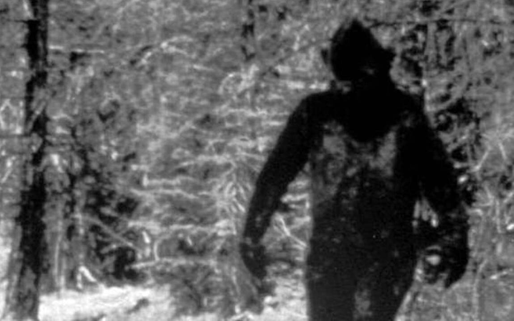

Bigfoot, also commonly referred to as Sasquatch, is a purported ape-like creature said to inhabit the forests of North America. Many dubious articles have been offered in attempts to prove the existence of Bigfoot, including anecdotal claims of visual observations as well as alleged video and audio recordings, photographs, and casts of large footprints.
On the Tule River Indian Reservation in Central California, petroglyphs created by a tribe of Yokuts at a site called Painted Rock are alleged by some to depict a group of Bigfoot called "the Family". The local tribespeople call the largest of the glyphs "Hairy Man" and they are estimated to be between 500 and 1000 years old. 16th century Spanish explorers and Mexican settlers in California told tales of the los Vigilantes Oscuros, or "Dark Watchers", large creatures alleged to stalk their camps at night. In the region that is now Mississippi, a French Jesuit priest was living with the Natchez in 1721 and reported stories of hairy creatures in the forest known to scream loudly and steal livestock.
Following the most credible historical documentation of the Sasquatch (informally known as "Bigfoot"), I ventured to the Tule River Indian Reservation in central California in an attempt to spot this hairy behemoth myself. The indiginous tribespeople were kind enough to lead me out into the forest where they have spotted the creature most frequently. We reached a certain point in the trail where they refused to go any further, and despite their warnings, I continued alone. I walked for many hours, looking for any evidence of abnormally large animal tracks, but had no luck. After a while I decided it might be best to set up a lookout, as all my movement may be alerting any creatures in this forest to my presence. I climbed into the low branches of a tree and began to wait. After an hour or so, my fatigue got the best of me and I drifted off to sleep. I jolted awake soon after to a feeling of dread. My instincts told me I was being watched. I frantically looked around and caught a glimpse of a large humanoid figure trudging off into the woods. I knew deep within me that if that creature wished any harm to come upon me, I would not have made it out of those woods alive. Out of the many cryptids I have encountered, this one has scared me the most. Most cryptids are wild and animalistic, attacking anything that moves. This creature had an element of intelligence and calculation to it that is far more terrifying than brute force alone.